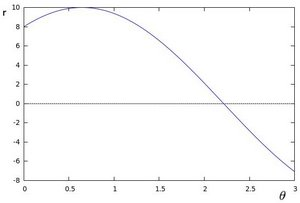
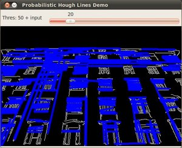

Hough Line Transform
Goal
In this tutorial you will learn how to:
- Use the OpenCV functions cv::HoughLines and cv::HoughLinesP to detect lines in an image.
Theory
The explanation below belongs to the book Learning OpenCV by Bradski and Kaehler.
Hough Line Transform
- The Hough Line Transform is a transform used to detect straight lines.
- To apply the Transform, first an edge detection pre-processing is desirable.
How does it work?
As you know, a line in the image space can be expressed with two variables. For example:
- In the Cartesian coordinate system: Parameters: \((m,b)\).
- In the Polar coordinate system: Parameters: \((r,\theta)\)

For Hough Transforms, we will express lines in the Polar system. Hence, a line equation can be written as:
\[y = \left ( -\dfrac{\cos \theta}{\sin \theta} \right ) x + \left ( \dfrac{r}{\sin \theta} \right )\]
Arranging the terms: \(r = x \cos \theta + y \sin \theta\)
In general for each point \((x_{0}, y_{0})\), we can define the family of lines that goes through that point as:
\[r_{\theta} = x_{0} \cdot \cos \theta + y_{0} \cdot \sin \theta\]Meaning that each pair \((r_{\theta},\theta)\) represents each line that passes by \((x_{0}, y_{0})\).
If for a given \((x_{0}, y_{0})\) we plot the family of lines that goes through it, we get a sinusoid. For instance, for \(x_{0} = 8\) and \(y_{0} = 6\) we get the following plot (in a plane \(\theta\) - \(r\)):
We consider only points such that \(r > 0\) and \(0< \theta < 2 \pi\).
We can do the same operation above for all the points in an image. If the curves of two different points intersect in the plane \(\theta\) - \(r\), that means that both points belong to a same line. For instance, following with the example above and drawing the plot for two more points: \(x_{1} = 4\), \(y_{1} = 9\) and \(x_{2} = 12\), \(y_{2} = 3\), we get:

The three plots intersect in one single point \((0.925, 9.6)\), these coordinates are the parameters (\(\theta, r\)) or the line in which \((x_{0}, y_{0})\), \((x_{1}, y_{1})\) and \((x_{2}, y_{2})\) lay.
What does all the stuff above mean? It means that in general, a line can be detected by finding the number of intersections between curves.The more curves intersecting means that the line represented by that intersection have more points. In general, we can define a threshold of the minimum number of intersections needed to detect a line.
This is what the Hough Line Transform does. It keeps track of the intersection between curves of every point in the image. If the number of intersections is above some threshold, then it declares it as a line with the parameters \((\theta, r_{\theta})\) of the intersection point.
Standard and Probabilistic Hough Line Transform
OpenCV implements two kind of Hough Line Transforms:
- The Standard Hough Transform
- It consists in pretty much what we just explained in the previous section. It gives you as result a vector of couples \((\theta, r_{\theta})\)
- In OpenCV it is implemented with the function cv::HoughLines
- The Probabilistic Hough Line Transform
- A more efficient implementation of the Hough Line Transform. It gives as output the extremes of the detected lines \((x_{0}, y_{0}, x_{1}, y_{1})\)
- In OpenCV it is implemented with the function cv::HoughLinesP
Code
What does this program do?
- Loads an image
- Applies either a Standard Hough Line Transform or a Probabilistic Line Transform.
- Display the original image and the detected line in two windows.
The sample code that we will explain can be downloaded from here. A slightly fancier version (which shows both Hough standard and probabilistic with trackbars for changing the threshold values) can be found here.
#include "opencv2/imgcodecs.hpp" #include "opencv2/highgui.hpp" #include "opencv2/imgproc.hpp" #include <iostream> using namespace cv; using namespace std; static void help() { cout << "\nThis program demonstrates line finding with the Hough transform.\n" "Usage:\n" "./houghlines <image_name>, Default is ../data/pic1.png\n" << endl; } int main(int argc, char** argv) { cv::CommandLineParser parser(argc, argv, "{help h||}{@image|../data/pic1.png|}" ); if (parser.has("help")) { help(); return 0; } string filename = parser.get<string>("@image"); if (filename.empty()) { help(); cout << "no image_name provided" << endl; return -1; } Mat src = imread(filename, 0); if(src.empty()) { help(); cout << "can not open " << filename << endl; return -1; } Mat dst, cdst; Canny(src, dst, 50, 200, 3); cvtColor(dst, cdst, COLOR_GRAY2BGR); #if 0 vector<Vec2f> lines; HoughLines(dst, lines, 1, CV_PI/180, 100, 0, 0 ); for( size_t i = 0; i < lines.size(); i++ ) { float rho = lines[i][0], theta = lines[i][1]; Point pt1, pt2; double a = cos(theta), b = sin(theta); double x0 = a*rho, y0 = b*rho; pt1.x = cvRound(x0 + 1000*(-b)); pt1.y = cvRound(y0 + 1000*(a)); pt2.x = cvRound(x0 - 1000*(-b)); pt2.y = cvRound(y0 - 1000*(a)); line( cdst, pt1, pt2, Scalar(0,0,255), 3, CV_AA); } #else vector<Vec4i> lines; HoughLinesP(dst, lines, 1, CV_PI/180, 50, 50, 10 ); for( size_t i = 0; i < lines.size(); i++ ) { Vec4i l = lines[i]; line( cdst, Point(l[0], l[1]), Point(l[2], l[3]), Scalar(0,0,255), 3, LINE_AA); } #endif imshow("source", src); imshow("detected lines", cdst); waitKey(); return 0; }
Explanation
Load an image
Mat src = imread(filename, 0); if(src.empty()) { help(); cout << "can not open " << filename << endl; return -1; }
Detect the edges of the image by using a Canny detector
Canny(src, dst, 50, 200, 3);
Now we will apply the Hough Line Transform. We will explain how to use both OpenCV functions available for this purpose:
Standard Hough Line Transform
First, you apply the Transform:
vector<Vec2f> lines; HoughLines(dst, lines, 1, CV_PI/180, 100, 0, 0 );
with the following arguments:
- dst : Output of the edge detector. It should be a grayscale image (although in fact it is a binary one)
- lines : A vector that will store the parameters \((r,\theta)\) of the detected lines
- rho : The resolution of the parameter \(r\) in pixels. We use 1 pixel.
- theta : The resolution of the parameter \(\theta\) in radians. We use 1 degree (CV_PI/180)
- threshold : The minimum number of intersections to “*detect*” a line
- srn and stn : Default parameters to zero. Check OpenCV reference for more info.
And then you display the result by drawing the lines.
for( size_t i = 0; i < lines.size(); i++ ) { float rho = lines[i][0], theta = lines[i][1]; Point pt1, pt2; double a = cos(theta), b = sin(theta); double x0 = a*rho, y0 = b*rho; pt1.x = cvRound(x0 + 1000*(-b)); pt1.y = cvRound(y0 + 1000*(a)); pt2.x = cvRound(x0 - 1000*(-b)); pt2.y = cvRound(y0 - 1000*(a)); line( cdst, pt1, pt2, Scalar(0,0,255), 3, LINE_AA); }
Probabilistic Hough Line Transform
First you apply the transform:
vector<Vec4i> lines; HoughLinesP(dst, lines, 1, CV_PI/180, 50, 50, 10 );
with the arguments:
- dst : Output of the edge detector. It should be a grayscale image (although in fact it is a binary one)
- lines : A vector that will store the parameters \((x_{start}, y_{start}, x_{end}, y_{end})\) of the detected lines
- rho : The resolution of the parameter \(r\) in pixels. We use 1 pixel.
- theta : The resolution of the parameter \(\theta\) in radians. We use 1 degree (CV_PI/180)
- threshold : The minimum number of intersections to “*detect*” a line
- minLinLength : The minimum number of points that can form a line. Lines with less than this number of points are disregarded.
- maxLineGap : The maximum gap between two points to be considered in the same line.
And then you display the result by drawing the lines.
for( size_t i = 0; i < lines.size(); i++ ) { Vec4i l = lines[i]; line( cdst, Point(l[0], l[1]), Point(l[2], l[3]), Scalar(0,0,255), 3, LINE_AA); }
Display the original image and the detected lines:
imshow("source", src); imshow("detected lines", cdst);
Wait until the user exits the program
waitKey();
Result
The results below are obtained using the slightly fancier version we mentioned in the Code section. It still implements the same stuff as above, only adding the Trackbar for the Threshold.
Using an input image such as:

We get the following result by using the Probabilistic Hough Line Transform:
You may observe that the number of lines detected vary while you change the threshold. The explanation is sort of evident: If you establish a higher threshold, fewer lines will be detected (since you will need more points to declare a line detected).